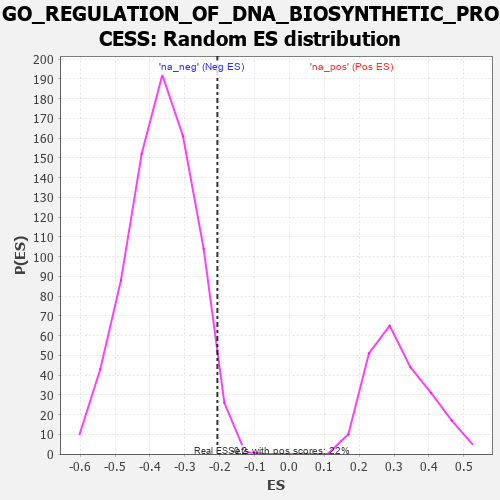

| | | Dataset | 7d |
| Phenotype | NoPhenotypeAvailable |
| Upregulated in class | na_neg |
| GeneSet | GO_REGULATION_OF_DNA_BIOSYNTHETIC_PROCESS |
| Enrichment Score (ES) | -0.2066121 |
| Normalized Enrichment Score (NES) | -0.56190497 |
| Nominal p-value | 0.972973 |
| FDR q-value | 1.0 |
| FWER p-Value | 1.0 |
Table: GSEA Results Summary
 Fig 1: Enrichment plot: GO_REGULATION_OF_DNA_BIOSYNTHETIC_PROCESS
Fig 1: Enrichment plot: GO_REGULATION_OF_DNA_BIOSYNTHETIC_PROCESS
Profile of the Running ES Score & Positions of GeneSet Members on the Rank Ordered List
| PROBE | GENE SYMBOL | GENE_TITLE | RANK IN GENE LIST | RANK METRIC SCORE | RUNNING ES | CORE ENRICHMENT | | 1 | HGF | | | 276 | 0.870 | 0.0247 | Yes |
| 2 | RFC2 | | | 488 | 0.635 | 0.0416 | Yes |
| 3 | PARN | | | 660 | 0.572 | 0.0591 | Yes |
| 4 | RFC3 | | | 663 | 0.571 | 0.0979 | Yes |
| 5 | RFC4 | | | 815 | 0.528 | 0.1150 | Yes |
| 6 | MEN1 | | | 1003 | 0.483 | 0.1244 | Yes |
| 7 | SRC | | | 1128 | 0.459 | 0.1401 | Yes |
| 8 | TFDP1 | | | 1180 | 0.450 | 0.1644 | Yes |
| 9 | DKC1 | | | 1292 | 0.431 | 0.1799 | Yes |
| 10 | DACH1 | | | 1471 | 0.395 | 0.1845 | Yes |
| 11 | PAK3 | | | 1889 | 0.322 | 0.1540 | No |
| 12 | XRN1 | | | 2786 | 0.185 | 0.0538 | No |
| 13 | ATR | | | 2800 | 0.183 | 0.0647 | No |
| 14 | SMG5 | | | 3285 | 0.108 | 0.0111 | No |
| 15 | RFC5 | | | 3389 | 0.091 | 0.0043 | No |
| 16 | MAPK3 | | | 3589 | 0.062 | -0.0165 | No |
| 17 | NEK2 | | | 3871 | 0.016 | -0.0508 | No |
| 18 | PINX1 | | | 4515 | -0.097 | -0.1252 | No |
| 19 | PNKP | | | 4572 | -0.111 | -0.1247 | No |
| 20 | XRCC5 | | | 4946 | -0.187 | -0.1589 | No |
| 21 | KLF4 | | | 5005 | -0.198 | -0.1526 | No |
| 22 | ATM | | | 5210 | -0.249 | -0.1613 | No |
| 23 | TNKS2 | | | 5239 | -0.254 | -0.1474 | No |
| 24 | CERS1 | | | 5518 | -0.325 | -0.1602 | No |
| 25 | NVL | | | 5572 | -0.338 | -0.1438 | No |
| 26 | SH2B1 | | | 5963 | -0.459 | -0.1615 | No |
| 27 | TNKS | | | 6138 | -0.516 | -0.1482 | No |
| 28 | RGN | | | 6233 | -0.547 | -0.1226 | No |
| 29 | PIF1 | | | 6604 | -0.713 | -0.1205 | No |
| 30 | PARP3 | | | 7289 | -1.158 | -0.1275 | No |
| 31 | NEK7 | | | 7415 | -1.285 | -0.0553 | No |
| 32 | DCP2 | | | 7724 | -1.833 | 0.0311 | No |
Table: GSEA details [plain text format]

Fig 2: GO_REGULATION_OF_DNA_BIOSYNTHETIC_PROCESS: Random ES distribution
Gene set null distribution of ES for GO_REGULATION_OF_DNA_BIOSYNTHETIC_PROCESS